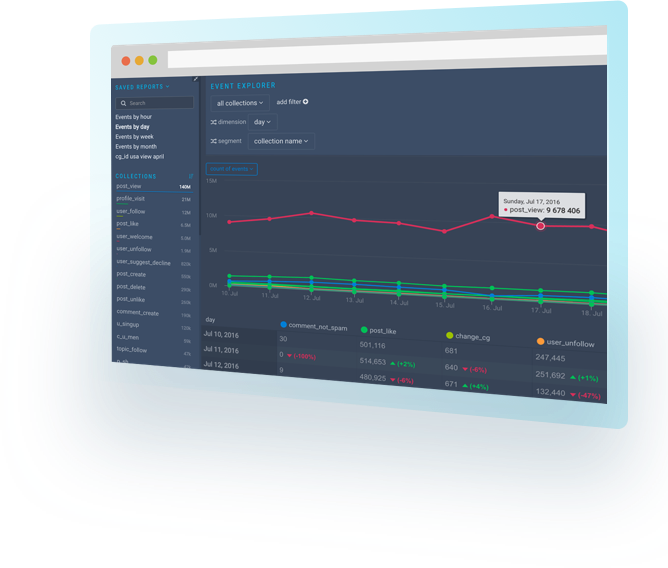

Our Products
Rakam API
Takes care of collecting, enriching (No more complex ETL!) and storing the data on data warehouse. One-click installation to your AWS, Heroku, Digitalocean accounts or on-premise servers via Docker.
- Open source, deploy it at your premise or in the cloud.
- Scalable, our customers currently store +30B events monthly
- Feature-rich and customizable with more than +50 endpoints
- Store data on your servers

Rakam UI
Visualize and analyze your data within seconds. A simple and intuitive user interface for business users and data scientists.
- Create your custom reports using SQL with dynamic variable support.
- Create your dashboards and customize the layout for your use-case
- Run funnels, retention and segmentation reports easily with drag & drop.
Analytics with Recipes
Recipes are sets of predefined reports and dashboards for different use-cases and data sources. When you integrate a data source with Rakam, you can install our recipes that includes useful reports for you and start using them without any additional work. We provide solutions with set of recipes. Here are some of the examples:
- Our marketing analytics solution includes Facebook Ads, Google Adwords and Google Webmaster recipes. You connect these data sources, install our recipes and turn Rakam into a marketing analytics solution.
- Our e-commerce analytics solution includes website, mobile recipes. You integrate our website tracker and mobile SDK, install our e-commerce recipe and use the e-commerce metrics that we created easily.
Find our more solutions